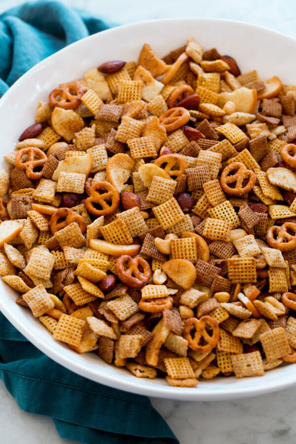

Chex Mix

Description
Chex mix is a delicious, easy to make snack mix that can be enjoyed during the holidays or anytime!
Preperation is simple and only requires a few ingredients. The recipe is also highly customizable,
meaning you can add basically anything, substitute or remove unwanted ingredients to create the perfect
snack mix for your tastes!
Ingredients
- 1 stick butter
- 2 tbsp Worchestershire sauce
- 2 tsp seasoned salt
- 1 1/2 tsp onion powder
- 1 tsp garlic powder
- 3 cups corn Chex
- 3 cups rice Chex
- 3 cups wheat chex
- 1 cup bagel chips
- 1 cup pretzels
- 1 cup mixed nuts
Steps
- Preheat oven to 250 degrees F
- Make seasoning mixture by melting butter in microwave or oven. Add Worchesteshire sauce and seasonings
- Combine dry ingredients in large, oven safe bowl or pot
- Gently toss dry indregdients with seasoning mixture
- Bake until crispy, about 1 hour, gently mixing every 15 minutes
- Spread on falt surface to cool. Store in airtight container once the Chex mix is at room temperature